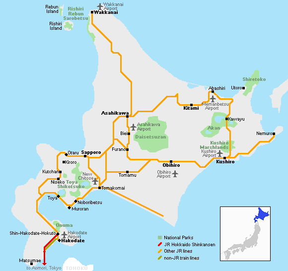
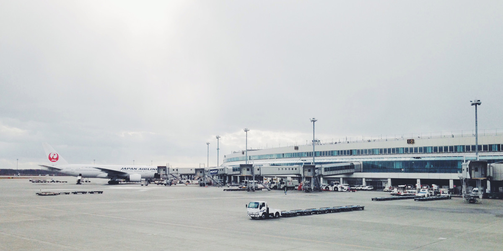
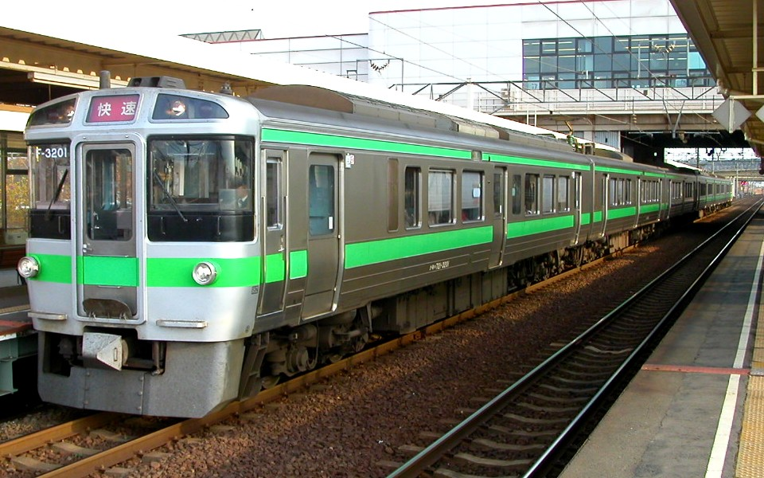
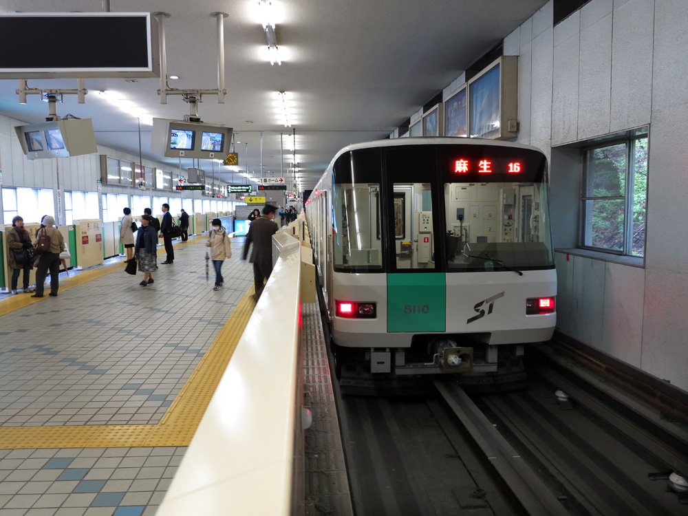
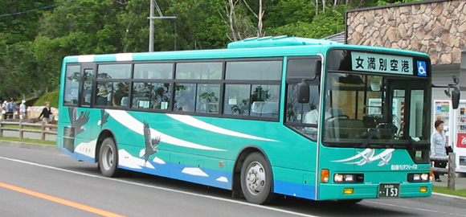
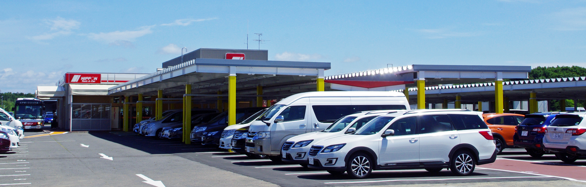

Transportation Guide in Hokkaido
Most tourists are amazed by how large Hokkaido is. Transportation in Hokkaido can prove a challenge when you are planning your trip around Japan's wild northern island.
If you want to fully enjoy Hokkaido, you have to build a flexible itinerary. When planning your itinerary, make sure you know the distances between each city and tourist spot so you can make the best out of your travel!
Just how big is Hokkaido?
Hokkaido, which accounts for about one-fifth of Japan's area, is about 83,454 square kilometers (see: Hokkaido Statistical Report for 2019). This is roughly the same as the area of Austria. If the maps of Hokkaido and Honshu are overlaid from the tip of the Shiretoko peninsula, Hakodate, located in the southwestern part of Hokkaido, will reach Osaka, and the western end of the Oshima peninsula will reach Okayama.
Hokkaido is roughly divided into 4 areas: Central, Southern, Northern, and Eastern Hokkaido. Travelling from a place in Eastern Hokkaido to Northern Hokkaido will normally take 1 day.

Airplane
Do you want to travel around Hokkaido as much as possible? If you want to save time to fulfil your itinerary, then the best option for you is to travel by airplane.
You can access the airports in Hakodate in Southern Hokkaido, Kushiro, Nakashibetsu and Memanbetsu in Eastern Hokkaido, and Wakkanai and Rishiri in Northern Hokkaido by 35 to 50-minute flights from the New Chitose Airport, considered as the entrance of Hokkaido.
However, airfare will certainly be an issue as the regular fare is almost twice the cost of other means of transportation in Hokkaido.

Train
The train is one of the options to consider if you want to travel at a low cost. They are selling the Hokkaido Free Pass for 27,430 yen, which allows unlimited rides on regular express trains and regular JR Hokkaido buses (except for some routes) for 7 days.
Unlike other areas in Japan, Hokkaido has no private railways, so you can board all trains with this pass. However, there are sections that have been suspended for long periods due to natural disasters and have been replaced by buses.
In addition, there are only a few limited express trains in the direction of Northern Hokkaido and Okhotsk beyond Asahikawa, so please pay attention to this when planning your trip.

Subway
The Sapporo Metro may not be big, but with its 49 stations and three lines, it has connected the city to places that are far away from Sapporo. In other words, this system is a vital means of transportation in the city.
All of the lines are interconnected among themselves via the Odori station, located in downtown Sapporo. There is also the Sapporo central station, which connects the Namboku and Toho lines with the national railway system. The three lines from the Sapporo Metro are the Namboku line, the Tozai line, and the Toho line.

Bus
Once you decide where you want to go, you can save more money by riding an express bus. There are limited routes for connection buses departing from the New Chitose Airport, so you will need to transfer to the Sapporo Bus Terminal and access to each city from there. Advance reservations are required depending on the bus route.
The most important thing to remember with express buses is that they might be full. When your itinerary overlaps during the Japanese holidays, Golden Week, Bon Festival and New Year holidays, it is often impossible to make a reservation.

Car
If you have an international driver's license, you can rent a car to allow for more freedom in your itinerary. You can go to places faster than trains and buses where there are limited flights.
If you choose a car model equipped with a navigation system that supports English and foreign languages, you should be able to reduce the chances of getting lost in unfamiliar places. The disadvantage of this mode of transportation in Hokkaido is finding a parking lot.
In popular tourist destinations, there is a long queue for parking even if you arrive near your destination early. Also, unlike many countries, the left lane traffic may take some time before you get used to it.
